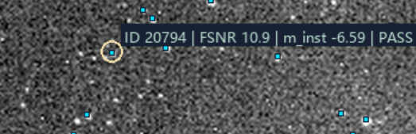
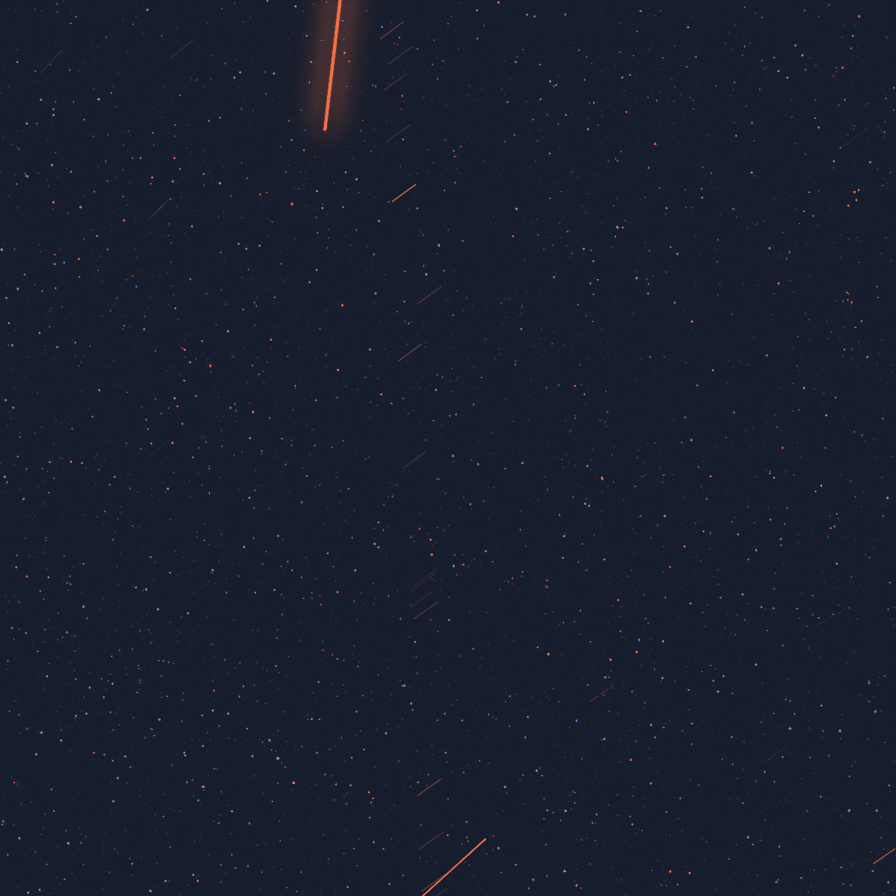
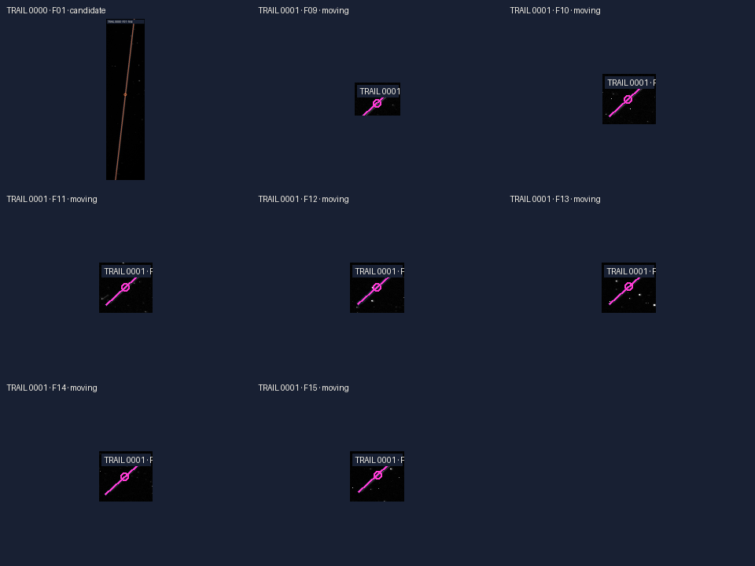
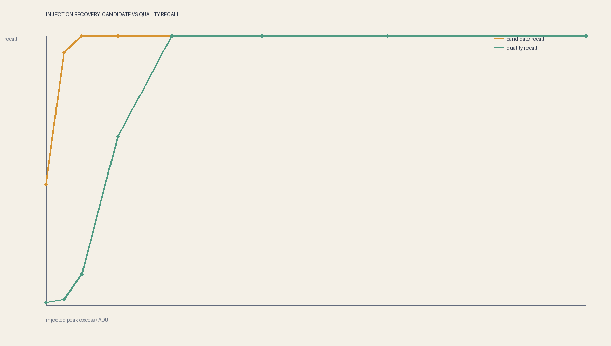

RST19 · 开运一号 · 答辩演示
星点、
星等与
运动目标
先确认它像不像星，再量亮度，最后看它有没有相对运动。
这份演示只讲一条顺序：从一张 FITS 里找出可信点源，给它测光并接到星等系统，再用 15 张连续图检查运动。
连续观测 / IMAGE PLANE
15
RST19 · 开运一号 · 答辩演示
先确认它像不像星，再量亮度，最后看它有没有相对运动。
这份演示只讲一条顺序：从一张 FITS 里找出可信点源，给它测光并接到星等系统，再用 15 张连续图检查运动。
01 · 先定义对象
亮点首先只是像素信号；经过形状检查，才成为候选点源；接上星表后，才可能知道它对应哪颗天体。
图例：从左到右，证据逐层增加；右侧的星表身份不是由一个亮点直接读出的。
相机记录的是 ADU 数值，里面同时有星光、背景、读出噪声和仪器异常。
局部亮、轮廓像点扩散函数，并通过质量规则，才进入可信点源层。
位置和测光与公开星表匹配后，才可以讨论它的表观星等和天体身份。
本页先固定后面所有数字的对象：像素信号 ≠ 候选点源 ≠ 物理恒星
02 · 数据与观测
先把数据边界说清楚，后面的星点数、星等和运动结果才有可比的基础。
标称响应范围 450–750 nm，视场约 9.78° × 9.78°。这决定了后面不能不加说明地把 Gaia G 当作相机的原生 V 星等。
文件还带有观测时间、指向和姿态等辅助字段；它们有助于找星表和做配准，但目前还不是完整 WCS。
数据来源：开运一号天基图像；具体字段见 doc/01-数据解析/ 和格式说明
03 · 星点识别 / 宽筛
宽筛的任务是尽量不漏掉可能的点源，不负责直接宣布“这就是一颗星”。
用接近星像大小的平滑核压低像素级起伏，再寻找局部峰值。
用大、小两个平滑尺度相减，减弱缓慢背景，突出特定大小的结构。
把图像拆成多个尺度，检查弱亮斑在哪一层有稳定响应；当前只作实验对照。
术语对应：Gaussian＝高斯平滑；DoG＝双尺度高斯差分；Starlet＝星形小波变换
04 · 星点识别 / 细筛
信噪比只说明亮得突出；点源身份还要靠轮廓、原始值和位置证据共同支持。
比较源信号和附近背景噪声，回答“这个亮斑有多突出”。
检查二维亮斑是否像一个成像点源，而不是单像素尖峰或细线。
看亮斑的宽度和圆整程度，识别拖尾、混叠和形状异常。
回看原始像素，检查饱和、重复码、坏像素、孔径污染和线状结构。

当前默认质量层：局部背景、通量 SNR、PSF 支持、形态、掩膜、饱和、线状与异常值审计
05 · 星点识别 / 输出
程序不是只输出一个总数，而是让每个候选都经过同一条可以回查的路径。
关键原则：候选响应是“值得检查”，质量通过才是当前算法口径下的可信点源
06 · 星点识别 / 结果
两个数字回答两个不同问题：前者尽量不漏，后者才是当前质量定义下的点源结果。
宽筛候选。多种方法合并近邻响应后的候选池；目标是保召回，其中还可能有噪声峰、线段、混叠和坏像素响应。
质量通过。净通量为正，并通过当前通量 SNR、形状、PSF 支持、边缘、掩膜、饱和和异常值检查。
当前默认：混合宽筛 / FWHM 2 px / 最小间距 4 px / 通量 SNR 5
07 · 星点识别 / 口径
数字越往后，证据越强；但每一层都不能冒充下一层。
答辩时先说清统计层级，再说数值；不要只报一个看似精确的总数
08 · 星等 / 第一步
星等不是从截图上的亮度直接读出，而是从扣除局部背景后的净通量开始。
孔径内像素求和，再减去等面积背景；背景环不能被邻近亮星或坏像素污染。
F_net孔径内所有像素的信号总和，扣掉局部背景后，才是暂时归属于目标源的信号。
F_rateF_rate 就是每秒收到多少净信号，用来消除不同曝光时间的影响。
如果把背景、邻星或噪声一起加进去，后面的星等会跟着偏亮，且无法解释偏差来自哪里。
F_rate：单位时间内的净通量；单位仍是当前图像的 ADU/s，不是物理能量单位
09 · 星等 / 第二步
它把相机测到的单位时间通量压缩成对数数值，适合比较亮暗，但还不是标准星等。
这里的“星等”是对数刻度：数值越小，代表测得的通量越大。
m_inst = −2.5 log10(F_rate)这里的零点暂时取作计算方便的内部基准，没有接到标准星。
m_inst“仪器”两个字很重要：它是当前相机和当前处理流程的内部读数，只适合在同一口径下排序。
因为零点还没有校准到天文学标准系统。负数不等于星体异常，只表示当前通量相对于内部零点较大。
不能直接把 m_inst 叫作 V 星等、G 星等或绝对星等；还缺零点、颜色项和相机响应标定。
本页只讨论图像内的亮暗排序，不把仪器星等冒充标准光度系统
10 · 星等 / 第三步
先用位置确认“可能是同一颗星”，再用多颗参考星拟合零点和颜色修正。
得到每个质量源的 m_inst、位置和测光误差。
用 WCS/指向约束在 Gaia 目录中寻找对应的天空位置。
用参考星估计 ZP（零点）和 C(BP−RP)（颜色修正项）。
只对通过质量和标定检查的匹配源写入 m_cal(G)。
示意图：参考星不要求只用一颗，而是看多颗星能否形成稳定关系并通过残差检查。
Gaia G 是公开目录的宽波段表观星等；相机 450–750 nm 响应与 Gaia G 并非天然完全相同
11 · 星等 / 当前边界
先分清仪器刻度、标定后的表观星等和严格的绝对星等，三者不能混写。
当前首帧的标定记录
11,721 颗用于求零点；15,234 个匹配源使用这个零点得到标定结果。13.99 只代表已标定子集，不是全图最暗极限。
M_G = m_cal(G) − 5 log10(d / 10 pc) − A_Gd 是可靠距离，A_G 是同一 G 波段的消光。缺任何一项，都不把表观星等硬改成绝对星等。
当前可以诚实报告：仪器星等；以及已标定子集中的 Gaia G 表观星等；严格 M_G 暂不作全场结论
12 · 运动 / 判断方法
同一颗恒星和相机一起移动；真正的运动目标，在扣掉共同位移后还会留下自己的轨迹。

真实注册差分图：把共同星场压到一起后，残差中的连续结构更容易被发现。图像中的橙色细线是实际数据产物，不等于已经完成目标身份确认。
用高质量静态源做互相最近匹配，估计相邻图像整体移动了多少。
在配准坐标和探测器坐标同时跟踪候选，记录出现帧数、位置和拟合残差。
点源运动和连续亮线走不同的审计路径，不能看到一条线就把整条线拆成很多星。
当前没有完整像元角尺度，因此运动结果先用图像像素和帧时间表达，不直接报轨道速度
13 · 运动 / 当前结果
运动判据必须建立在配准之后；亮度高、出现在一帧，都不能单独证明它在运动。

真实数据局部图：F09–F15 的连续线状候选
出现数和位移都要通过
超过配准残差尺度
还不是轨道参数
线状结构和点源轨迹分开统计；当前只能说发现连续线状候选，不能仅凭这条线给出物理目标身份。
运动结果来源：15 帧配准与轨迹审计；点源 moving 与独立线状分支不混算
14 · 研究延伸
创新不一定是再加一个炫目的模型，也可以是把观测结果变成可复核、可比较的量。
对 15 帧配准后的点或线做拟合，记录位移、方向和拟合残差；缺少像元角尺度时不换算轨道速度。
区分稳定星场、瞬态响应和间歇候选，并把“出现了几帧”与“是不是同一机制”分开。
用逐帧净通量做归一化比较，记录目标变亮或变暗；没有系统响应时不称为绝对通量。
在真实背景中放入已知亮度的模拟源，分背景、拥挤和边缘报告回收率，而不是只给一个全场准确率。

创新指标不是替代星点真值，而是把现有观测证据继续量化
15 · 答辩准备 / 识别
回答顺序固定：先说数字属于哪一层，再说它怎么得到，最后说它还不能证明什么。
先检查是不是同一文件、同一预处理、同一阈值、同一去重和同一计数定义。缺少这些条件，18,000 只能作为对照，不能当程序目标。
不能。SNR 只说明亮斑比附近背景突出；还要看点扩散函数、宽度、原始 ADU、边缘、饱和、掩膜和 15 帧行为。
不能。它们使用同一张原图，不是独立投票。多算法交集只提高复核优先级，最终仍由统一细筛和星表/注入证据决定。
答辩准备：不要把“算法命中”“质量通过”和“恒星真值”用同一个词带过
16 · 答辩准备 / 星等
这些符号第一次出现时就解释对象、单位和边界，后面再使用缩写。
F_rate 是扣掉局部背景后的净通量除以曝光时间，单位是 ADU/s。它是相机读数，不是已经换算好的物理能量。
m_inst 是 F_rate 的对数表示，只能在当前相机和当前流程内比较。没有标准零点，所以可能是负数。
Gaia G 是盖亚卫星星表的宽波段表观星等；m_cal(G) 是相机读数经过位置匹配、多星零点和颜色项标定后的结果。
最重要的区分：m_inst 是内部刻度，m_cal(G) 是表观星等，M_G 才是绝对星等
17 · 收束
先识别，再测光定标，最后做跨帧运动分析；每一步都有自己的证据和不能越过的边界。
宽筛保召回，细筛看 SNR、轮廓、原始 ADU 和位置；候选数不等于恒星数。
先算 F_rate，再得到 m_inst；完成参考星标定后才写 m_cal(G)，绝对星等另需距离和消光。
15 帧配准后，稳定星场应留下；相对轨迹和连续线状结构分开审计。
答辩时的 30 秒说法
我们先从原始 FITS 中找出局部响应，再用背景、信噪比、点扩散函数和原始 ADU 筛出可信点源。星等从净通量开始，接上 Gaia G 参考星后才能得到标定的表观星等。最后用 15 张连续图扣掉共同位移，判断剩下的结构是不是在运动。
RST19-SOL · 星点识别、星等测量与运动分析